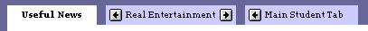
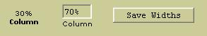

What is DLM and where did it come from?
Configuring uPortal to Use DLM
DLM Guest Fragment
Introducing dlm.xml
Defining Fragments
Defining Audiences
Setting up Fragment Layouts
Future Direction
In uPortal, Layout Management refers to how the user interface seen by a user is generated and changed. In version 2.0, only Simple Layout Management, SLM, was available in the portal. All layout pieces like tabs, columns, and channels were owned by the user. There was little control available for an institution to control a user's layout. When Sungard SCT, then Campus Pipeline, adopted uPortal for their Luminis product they had to allow schools to choose how much or how little of the layout choose how much or how little is locked in place. Furthermore, this should be modifiable at any time and such changes should then appear in the portal. The result was Distributed Layout Management or DLM which debuted in Luminis in 2002.
This resulted in JA-SIG designing a similar feature known as Aggregated Layout Management or ALM. With the advent of ALM there were two approaches to dynamic layout management. However, although they have complimentary features, ALM and DLM each provide benefits that are not had by the other implementation. In 2004 Sungard SCT was contacted to see if the features of ALM and DLM could converge into a single offering. The benefits are obvious. With the community working to enhance the features of a single offering all will benefit. Accordingly, work was started in late 2004 to contribute DLM back to the community and have it available starting in uPortal version 2.5.0.
uPortal version 2.5 comes configured to use ALM by default. To convert between the different layout management approaches follow these simple steps.
Step 1: Stop the web server if not stopped already.
Step 2: Open portal.properties and search for any of these three accronyms. There are two properties that the portal uses to startup the appropriate code to perform that layout management functionality. Preceding each of these properties is a comment block outlining what value that property should have for each of the respective layout management approaches. The properties that need to be changed are:
| portal.properties to be Changed |
|---|
| org.jasig.portal.layout.UserLayoutStoreFactory.implementation |
| org.jasig.portal.layout.UserLayoutManagerFactory.coreImplementation |
After changing this value redeploy using, "ant deploy", so that the modified portal.properties file is pushed to <webApplicationRoot>/WEB-INF/classes/properties unless you changed the version in that location.
Step 3: Modify user accounts in the database. Specifically, the UP_USER_PROFILE table contains a lookup of the structure and theme stylesheets that should be used by users. The following SQL can be used to modify the values for the respective layout management approaches. See the following table for the specific stylesheet values that come in the default uPortal database.
UPDATE up_user_profile SET structure_ss_id=<struct Id From Below>, theme_ss_id=<theme Id From Below> WHERE theme_ss_id=<current Theme Id In up_user_profile> |
| Approach | Structure Stylesheet Id | Theme Stylesheet Id |
|---|---|---|
| SLM | 1 | 1 |
| ALM | 3 | 11 |
| DLM | 4 | 3 |
Step 4: Restart the web server.
DLM Guest FragmentWhen you first configure the portal to use DLM, start up the web server, and go to the portal with a browser you will notice a new "Welcome" tab appears. Of the tabs in the login page, this one is unique. Most are part of the guest user's own layout. This tab isn't. In DLM terminology it is a fragment that was merged in by DLM. Traditionally, if you wanted to change what guests see you would set a password for the guest user, log in as guest, and change the layout. Not with DLM. To change the contents of this tab log in with the following user id and password:
User Id: guest-lo, Password: guest-lo
This user is a DLM fragment owner. This account has all of the same capabilities as a regular user with one exception, no fragments are merged into a fragment owner's layout. Fragment owners see only their owned layout since that layout becomes the fragment that is pushed into other layouts.
Now once you log in, change the guest fragment, and log out, you will notice that this tab didn't change. Doesn't DLM push changes to the guest layout? Of course it does. The problem here is that the guest layout that you see is cached in a layout manager. For regular users a layout manager is loaded when they log in. Hence, so is their layout. The guest layout manager is loaded when the first request is made to the portal after starting up and is cached in memory thereafter. So changes made to fragments that go to regular users will present their changes the next time that a user logs in after that fragment has been changed. But currently, to see changes pushed to the guest layout, the portal must be restarted. This will be fixed soon. We hope.
Introducing dlm.xmlWhen DLM was developed, time was of the essence. A new user interface taylored to building fragments and a new database schema was too aggresive an undertaking for engineers new to the uPortal code base. Upon further investigation of the portal architecture and database schema it was determined that a derivative approach could be taken instead. In a derivative approach, existing, reliable pieces of the portal could be used to produce layout fragments to be pushed to users. Furthermore, there would be no database schema changes. Specifically, fragments would be obtained by using regular portal accounts to define what each fragment should look like. Such was and is the design of DLM. A configuration file, dlm.xml defines fragments, their audiences, and the special portal accounts used to set up their layouts. (See Future Direction on how dlm.xml will be replaced in the near future.)
Although dlm.xml is xml based it does not have a defined schema or DTD. Its expected structure is defined by the expectations of the DLM loading infrastructure. This is in part due to the extensible nature of dlm.xml as will be seen in the declarations of the fragment audience definitions. Therefore, the remaining information in this section and related sections will portray the implicit structure expected by the DLM loading infrastructure.
The dlm.xml file is located in the properties directory. The top level element in dlm.xml is the <managedLayoutFragments> element. It includes the namespace declaration for DLM used to prefix all expected DLM property, fragment, and audience elements. This element appears as follows in dlm.xml.
<managedLayoutFragments xmlns:dlm="http://org.jasig.portal.layout.dlm.config">
The only two supported child elements for managedLayoutFragments are <dlm:property> and <dlm:fragment>. Others may be included but they will be ignored. The <dlm:property> element has two required attributes, 'name' and 'value'. There are currently only two properties supported by DLM and if not defined, suitable defaults will be used as explained below.
The 'defaultLayoutOwner' PropertyIf defined the value of this property should be the user ID (ie: the log-in ID) of an account whose layout should be copied for all new fragment owners. When a fragment is defined in dlm.xml it includes an ownerID attribute. (See the related section on defining fragments.) Since fragments are layouts for special accounts then these accounts must have a layout. When regular users log in for the first time and have no layout, the portal gives them a copy of a default account's layout as declared in portal.properties. This default should not be used for fragment owner accounts since it will result in that entire layout being pushed to all users. The approach take by the default dlm.xml is to use a special account included in the portal. To change this account you can use the following credentials.
User Id: fragmentTemplate, Password: fragmentTemplate
Warning: It is strongly recommended that you do not change this user account's layout. It is empty except for hidden content like the header and footer folders and their channels. The layout for this account including hidden but necessary content is copied whenever a new fragment owner is declared in dlm.xml. The layout for the owner account is created immediately after adding the fragment's declaration to dlm.xml and restarting the portal. These accounts should be empty until such time that the account can be accessed and the proper layout set up that should be pushed for that fragment.
The 'org.jasig.portal.layout.dlm.RDBMDistributedLayoutStore.fragment_cache_refresh' PropertyFor performance, DLM caches the layout for each defined fragment in memory. When layout owners modify the layout, those changes are pushed into the database and into the in-memory cache in the server handling the session for that account. If multiple servers are employed, the other servers will not see these changes made by the fragment owner. This property determines how often the cache of fragment layouts is reloaded to force such changes to appear in other servers. This does not include instantiating new fragments declared in dlm.xml. This only forces a reload of the fragments seen in dlm.xml when the servers were last restarted.
Defining FramentsThe <dlm:fragment> child element of the outer most managedLayoutFragments element is used to define a fragment. There is no restriction on the number of child <dlm:fragment> elements of managedLayoutFragments. The following sample is one of the fragments defined in the default dlm.xml file that comes with uPortal.
<dlm:fragment name='Guests' ownerID='guest-lo' precedence='10'>
<dlm:audience evaluatorFactory='org.jasig.portal.layout.dlm.providers.GuestUserEvaluatorFactory'/>
</dlm:fragment>
All elements defined and expected by DLM are prefixed with dlm indicating that they are part of the DLM namespace. The fragment element has a name attribute that should be unique for all fragments. This name is presented in the title bar of the portal when the owner of this fragment is logged in as shown below.
Each fragment must declare an ownerID attribute. This is the log-in to use when logging in to edit the layout for this fragment. It is important that this account not exist prior to adding the fragment. When dlm.xml is modfied, the portal must be restarted for the configuration to be loaded. Upon loading, if that account already exists and has a layout it will immediately be pushed to users. If the account does not exist, then upon restarting the portal, DLM will create that account and populate its layout with a copy of the layout of the account specified with dlm.xml's defaultLayoutOwner property. That layout has no visible content. In this way this fragment does not push any content to users until the owner has time to set up the layout that should be pushed. Note: the md5passwd command line utility must still be used after restarting to set the password for the new account to allow a fragment maintainer to log in to that account and set up the layout:
The 'precedence' Attributeant md5passwd -Dusername=guest-lo
Each fragment must also declare an integer precedence value. This value is used during merging of fragments to position elements contributed from different fragments. It is also used to determine that precedence elements can override a lower precedence, movement-restricted element forcing it to a less valueable real-estate location. For example, the default dlm.xml file defines three fragments:
Guests: precedence = 10
Entertainment: precedence = 100
News: precedence = 80
When a regular user, in this case the student account, logs in to the portal and selects the Preferences link the following ordering of tabs will appear. Note that the entertainment tab can move to the right of the news tab but that the student tab is not allowed to move to the left of the news tab.

This behavior is due to the owner of the news tab's fragment marking the news tab as not moveable. However, restricting movement is relative. All elements from a fragment inherit the precedence of that fragment. A tab from a fragment with higher precedence like the entertainment tab, can override a movement restriction of a lower precedence tab.

Now the student tab is owned by the student user. User layout elements have a precedence of zero and hence any fragment element can always force user owned elements to lower-valued real-estate locations. However, if a fragment element has not been movement restricted then lower precedence tabs can move them as is shown below with the student tab moved to the left of the entertainment tab. But note that due to the locked news tab and the relative precedences that the student tab is never allowed to move beyond the news tab.

As can be seen, movement restrictions restrict movement of lower precedence elements to higher valued screen real-estate locations. DLM allows users to alter fragment elements pushed into their layouts if such changes are allowed by the fragment. This means that users can add columns to fragment tabs and channels to fragment columns. Accordingly, real-estate value differs based on element type. For tabs, the most valued real-estate is furthest to the left since tabs to the right can ultimately be forced off of the right side of the page and outside the view being shown by the browser. Columns have a similar value direction of left to right from highest to lowest value for a similar reason. Channels have a direction from the top of a column to the bottom for highest to lowest value respectively since channels further down in a column can be forced off of the bottom of the browser's visible viewing area.
Defining AudiencesEach <dlm:fragment> element can contain from zero to many <dlm:audience> elements. Each audience element defines a group of users who will receive that fragment. If a fragment has more than one audience element then the set of users that get that fragment is the union of all nested audience elements.
The 'evaluatorFactory' AttributeThe <dlm:audience> element has a single required attribute, evaluatorFactory. This attribute should have the fully qualified path name of a class which implements the org.jasig.portal.layout.dlm.EvaluatorFactory interface for aquiring an evaluator. The factory implementation should have a zero argument constructor and implement the only method in the interface:
public Evaluator getEvaluator( org.w3c.dom.Node audience )
throws Exception;
The DLM infrastructure will instantiate the factory using the zero argument constructor and call getEvalutator passing a node representing the <dlm:audience> element. This can then be used by the factory to return an evaluator appropriate for any configuration information included within the audience block. This means that the contents of the audience element are dictated completely by the declared EvaluatorFactory.
The object returned from getEvalutator must implement the org.jasig.portal.layout.dlm.Evaluator interface as shown below.
public boolean isApplicable( IPerson p )
DLM obtains from each audience's factory an evaluator and when a user logs in it passes through every fragment asking its audience evaluators, isApplicable, passing an IPerson implementation. If the user meets the requirements defined for that audience then the method returns a value of true and that fragment is included in the layout for that user. If the factory is unable to create and return an evaluator it should throw an Exception with a clear message indicating the problem. For example, suppose the
<dlm:audience evaluatorFactory="IPersonEvaluatorFactory"/>
This would result in the IPersonEvaluatorFactory, to be explained shortly, throwing an exception with the following message since it requires nested configuration content:
Invalid content. Expected one to many <paren>, <NOT>, or <attribute> in '<dlm:audience evaluatorFactory="IPersonEvaluatorFactory"/>'
If an exception is thrown when obtaining an evaluator from an evaluator factory then the message is logged as a warning and the audience element in question is discarded and not included in the evaluators for that layout fragment. Other evaluators for that layout would still be in effect.
The following evaluator factories are provided. All are found in the org.jasig.portal.layout.dlm.providers package.
The GuestUserEvaluatorFactoryThis factory produces and evaluator that returns the value of IPerson.isGuest(). As such it does not use any configuration information within the audience element that declares it so the element can be empty. This factory is used in the version of dlm.xml included in the portal to push the Guest fragment to the guest user so that it shows on the log-in page.
The AllUsersEvaluatorFactory<dlm:fragment name='Guests' ownerID='guest-lo' precedence='10'>
<dlm:audience evaluatorFactory='org.jasig.portal.layout.dlm.providers.GuestUserEvaluatorFactory'/>
</dlm:fragment>
This factory produces and evaluator that always returns true. This can be used to push a fragment to all portal users including the guest user. Like GuestUserEvaluatorFactory it requires no content within the audience element and hence the element can be empty.
The PersonEvaluatorFactoryThis factory produces an evaluator configured as defined by required content nested within its declaring audience element. It supports a configuration syntax from which arbitrarily complex grants of the fragment can be made based on attributes found in the passed-in IPerson object. Specifically, it obtains attributes from the IPerson object using the getAttribute call. The following syntax elements are supported.
<paren> ELEMENT
This element has one optional attribute "mode" which can contain one of three cast-sensitive values: OR, which is the default, AND, or NOT. OR causes the paren element to evaluate all contained tests and if any of them returns true then it too will return true. AND returns true only if all contained tests are true. NOT inverts any contained test. If more than one contained test is included then a logical OR operation is performed first and that result inverted. It should be noted that when PersonEvaluatorFactory factory is used it provides an implicit
<attribute> ELEMENT
This element is used to specify which one of five available tests should be performed on an attribute in the passed-in IPerson object. The particular attribute to be tested is indicated in the required name attribute. The required mode attribute indicates the type of test and can be one of the following: exists, equals, contains, startsWith, and endsWith. The value to be compared is indicated by the value attribute. The value attribute is not required and indeed not used for the "exists" mode. Values for both mode and name are case sensitive.
The Entertainment fragment included in the default dlm.xml file in the portal uses this factory to push the entertainment fragment to all users that do not have a "username" attribute with a value of "guest".
The GroupMembershipEvaluatorFactory<dlm:fragment name='Entertainment' ownerID='ent-lo' precedence='100'>
<dlm:audience evaluatorFactory='org.jasig.portal.layout.dlm.providers.PersonEvaluatorFactory'>
<paren mode="NOT">
<attribute name="username" mode='equals' value='guest'/>
</paren>
</dlm:audience>
</dlm:fragment>
This factory returns an evaluator that can evaluate group memberships. Specifically, the returned class inherits from the evaluator provided by PersonEvaluatorFactory. This means that its syntax semantics are identical except for the <attribute> element. Its semantics are overwritten to support only a single mode, memberOf. The name attribute should contain the name of the group with matching case. The value attribute is not used. The News fragment in the default dlm.xml file in the portal uses this factory to push the news fragment to members of the Students group who are not also members of the Faculty group.
<dlm:fragment name='News' ownerID='news-lo' precedence='80'>
<dlm:audience evaluatorFactory='org.jasig.portal.layout.dlm.providers.GroupMembershipEvaluatorFactory'>
<paren mode="AND">
<attribute mode='memberOf' name='Students'/>
<paren mode="NOT">
<attribute mode='memberOf' name='Faculty'/>
</paren>
</paren>
</dlm:audience>
</dlm:fragment>
Note: dlm.xml was designed to allow institutions the ability to define and plug-in their own custom evaluators. The dlm.xml file will be replaced in the near future with the new permissions work that is targeted for uPortal 2.6.0. That solution will have more flexibility than is had with the current design of dlm.xml. For example, although completely different technology, logically the new solution blurs the boundary between audience elements allowing person attribute tests to be combined in the same boolean equation as group membership evaluations. When DLM migrates to that new approach only these classes and their semantics are guaranteed to be migrated. Any configuration added via custom factories from an institution will have to be planned for and migrated by that institution as part of upgrading to the version of DLM in 2.6.0.
Setting up Fragment LayoutsOnce a fragment is defined in dlm.xml, the server bounced, and the password configured for the new fragment owner account, a fragment maintainer can log into that account and set up the layout that should be used for that fragment. For this, an extended version of SimpleLayoutManagement's Preferences channel is provided and is the channel seen when using DLM and the Preferences link is selected. For non-fragment users they see that channel in the traditional manner. For fragment owner the preferences channel changes slightly to indicate the name of the fragment that is being edited as can be seen in the images below. Additionally, controls are added to the user interface to provide the ability to restrict what users of the fragment can do to fragment elements.
TabsIn the image below the typical controls for a tab are shown along with some DLM specific fragment-user-actions that can be restricted. By default all check boxes are selected and hence all actions are allowed by end users. As seen in the image, the "Useful News" tab in the News fragment's layout restricts movement by end users of the fragment. To modify any of these actions the appropriate checkbox should be checked or unchecked as needed and the "Set Actions" button pressed. Each of these actions that can be restricted for tabs is discussed below.

If moving a tab is restricted by a fragment owner then users will not be able to move any of their personally-added tabs to the left of this tab. If any tabs exist in the user's layout that come from a fragment with lower precedence as declared in dlm.xml then the user will also be unable to move those tabs to the left of this tab. Tabs from a fragment with higher precedence can be moved by the end user to the left of this tab. If any of these lower precedence tabs or user-added tabs were moved to the left of this tab prior to it being marked as movement restricted then those tabs will be pushed to the right of this tab when the user next logs back in. To the end user the inability to move a lower precedence tab including those added by the user is depicted by the lack of the buttons allowing the user to move the tab to the left as seen in the image below.
If editing tab properties is restricted by a fragment owner then users will not be able to rename that tab in their layout. If a user has previously renamed that tab and the fragment owner then marks the tab to prevent editing of properties then the next time that the user logs in that tab name change will be discarded and the name set by the fragment owner will reappear. When such a tab is restricted from editing the controls for renaming that tab are removed from the user's view when selecting that tab as shown in the image below. The "Real Entertainment" tab has editing of properties restricted as can be seen by the missing renaming elements when viewed by the student user.

If adding columns is restricted by a fragment owner then users will not be able to add columns to that tab in their layout. If a user has previously added columns to that tab and the fragment owner then marks the tab to prevent adding columns then the next time that the user logs in those user columns will be discarded. (There is currently no holding place to such discarded items. Such a holding place similar to the waste basket concept could be added if there was a pressing needed and a channel could be created to allow a user to restore those items to some other location in their layout.) When such a tab is restricted from adding columns the "Add Column" buttons are removed from the user's view when selecting that tab as shown in the image below. The "Useful News" tab has adding columns restricted as can be seen by the missing buttons in the spaces between and to the left and right of columns when viewed by the student user.

If deleting the tab is restricted by a fragment owner then users will not be able to delete this tab from their layout. If a user has previously deleted this tab and the fragment owner then marks the tab to prevent deleting then the next time that the user logs in, that tab will reappear. When such a tab is restricted from being deleted the "Delete this tab" link is removed from the user interface for that tab when end users are editing their layout.
ColumnsThe action-restricting controls for columns are nearly identical to those of tabs as is their application.
Move ColumnIf moving a column is restricted by a fragment owner then users will not be able to move any columns that they have added to the tab to the left of this column assuming that the tab allowed them to add their own columns. If any user-added columns have were previously added to the left of this column and the fragment owner marked this column as movement restricted then those user added columns will be bumped to the right of this column the next time that the user logs in. Additionally, the buttons for moving those user added columns to the left of this column are removed from the user interface when a user is editing that tab in their layout.
Edit PropertiesRestriction of column property editing is identical to restriction of tab property editing except that the only property that currently exists for columns is width. If editing column properties is restricted by a fragment owner then users will not be able to change the column's width. They can read it but they can't change it as shown in the image below. Note that only one of these columns is marked as being edit restricted.

Add ChannelsIf adding channels is restricted by a fragment owner then users will not be able to add channels to that column in their layout. If a user had previously added channels to that column and the fragment owner then marked the column to prevent adding channels then the next time that the user logs in those user added channels will be discarded. When such a column is restricted from adding channels, all "Add Channel" buttons are removed from the user's view of that column.
Delete ColumnIf deleting the column is restricted by a fragment owner then users will not be able to delete this column from their layout. Additionally, the user will not be able to delete the tab containing this column. When such a column is restricted from being deleted the "Delete this column" link is removed from the user interface for that column and the "Delete this tab" link is removed for its containing tab when end users are editing their layout.
ChannelsThe action-restricting controls for channels vary from those of columns and tabs in that only move and delete are restricted.
Move ChannelIf moving a channel is restricted by a fragment owner then users will not be able to move any channels that they have added above this channel assuming that the column allowed them to add their own channels. If any channels were previously added above this channel and the fragment owner marked this channel as movement restricted then those user added channels will be bumped below this channel the next time that the user logs in. Additionally, the buttons for moving those user added channels above this channel are removed from the user interface when a user is editing the column containing that channel in their layout.
Delete ChannelIf deleting a channel is restricted by a fragment owner then users will not be able to delete that channel from their layout. Additionally, the user will not be able to delete the containing column and tab. If any of these were previously removed by the user and the fragment owner then marked that channel as undeletable then the tab and all of its columns and channels would reappear the next time that the user logged in. When such a channel is restricted from being deleted the delete button for the channel is removed from the user interface when an end user is editing their layout. Additionally, the "Delete this column" link is removed from the user interface for that channel's containing column and the "Delete this tab" link is removed for its containing tab.
Future DirectionThe initial release of DLM in uPortal 2.5.0 is DLM as used in Sungard SCT's Luminis product since 2002. For uPortal 2.6.0 focus will be placed on the following areas to enhance DLM. The information provided here represents the items that are anticipated to be for 2.6.0. Additionally, this information represents some intended designs. Such may change as implementation proceeds or requirements are clarified based in experience with the new pieces. If you have suggestions or questions on these items please share them on the uPortal email lists.
Fragment ManagerThe dlm.xml file is being replaced with a Fragment Manager channel allowing fragments to be defined via the portal user interface. A mock-up of this fragment manager is as shown below. Most items currently configured using the dlm.xml file are visible. For example, precedence is a point value for fragments but even when two fragments are given an equal precedence, DLM then drops back to the ordering in dlm.xml with the first fragment of these two encountered during loading interpreted as having the higher precedence. So ultimately, there is no such thing as equal precedence in DLM. One fragment has greater or lesser precedence than any other fragment. This is depicted within the Fragment Manager by the ordering of fragments from top to bottom. Up and down buttons in the Precedence column enable an administrator with proper permissions to adjust the precedences of fragments.

The name of each fragment corresponds to the "name" attribute of the <dlm:fragment> element. The magnifying glass button to the right of the Precedence column allows a user with proper permission to view and edit the layout of a fragment. Each fragment's layout will be protected by a layout editing permission. If a user is granted that permission then they will be able to use the fragment manager but will only see those fragments for which they have permission. The delete button is for deleting a fragment. The edit button immediately to the left of the fragment name allows an administrator to change the name and type of the fragment.
DLM does not currently support "pulled" fragments, fragments that users can subscribe to. As can be seen this capability will be added. Both pushed and pulled fragments will be shown in the same view in the Fragment Manager. This is important since each type can restrict movement of tabs and hence those tabs may be competing for location in a user's layout. The ordering here with respect to each other clearly shows which will have greater precedence when competing in a user's layout.
The edit button to the right of the Type column will delegate over to a new channel being created as part of the permissions effort also under way for 2.6.0. Note the complex boolean expressions based on both user attributes and group membership constructs. Such will be the anticipated capability of the new permissions functionality. It is also anticipated that there will be a direct migration path for the constructs currently supported in dlm.xml by the currently defined set of evaluator factories.
Pulled FragmentsAs noted in the mock view of the Fragment Manager, pulled fragment support will be added. The audience specified for pulled fragments is the set of users who will have that fragment show up in the list of fragments that they can subscribe to from within their preferences area via a new link added for that purpose. The list of available fragments will be provided by a new channel that is brought into focus mode by selecting that link. Once a fragment is selected the focus will return to the preferences area and that fragment's tabs will be included at that time.
Integrated ModesThis is a challenging area to define not because integrated modes is challenging but due to different groups of people having different perspectives on the easy of use or difficulty of use of integrated modes. Currently, DLM uses the preferences channel. It seems that the best approach would be to offer both the preferences channel and integrated modes support and let institutions determine which will be used or allow users to select the one that works best for them. So more work will be done here to determine which route should be taken.
mrb 8/22/2005